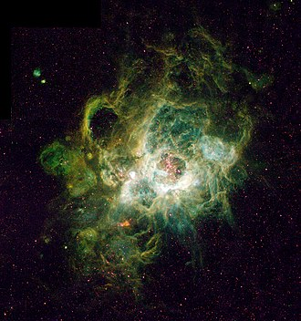

Wodór (H, łac. hydrogenium) – najlżejszy ze wszystkich pierwiastków o liczbie atomowej 1. Ma też bardzo prostą budowę. Ma tylko jeden proton i elektron. Jest lekkim gazem palnym.
Jest najczęściej występującym pierwiastkiem we Wszechświecie. W ogromnych ilościach występuje w gwiazdach i materii międzygwiezdnej, w tym w mgławicach (tu stanowi nawet 90% masy). Stanowi około 75% masy wszystkich pierwiastków we Wszechświecie. Na Ziemi występuje głównie w formie cząsteczkowej H2 w postaci gazu, wchodzi w skład wody i związków organicznych.
Wodór wchodzi w gwałtowną reakcję z tlenem i powietrzem. Tworzy z nimi mieszaninę piorunującą, wybuchową. W postaci cząsteczkowej jest bezbarwnym, bezwonnym i bezsmakowym gazem. Nie jest toksyczny. Pierwiastek ten łatwo tworzy związki chemiczne, bardzo często z niemetalami.
Wodór otrzymuje się z rozkładu wody (elektrolitycznie), a także węglowodorów.
Słońce spala w reakcji termojądrowej 600 milionów ton wodoru na sekundę. W wyniku spalania powstaje hel i mnóstwo energii, która dociera do Ziemi. Energia, jak dociera do naszej planety odpowiada spaleniu około 1,6 kg wodoru na sekundę w reakcji termojądrowej!
Jest szeroko stosowany w przemyśle i technice:
synteza amoniaku, paliwo rakietowe, chłodziwo, produkcja margaryny.
Tryt i deuter są wykorzystywane jako wskaźniki izotopowe, a także nad kontrolowaną syntezą termojądrową.

NGC 604 – olbrzymi obszar H II w Galaktyce Trójkąta